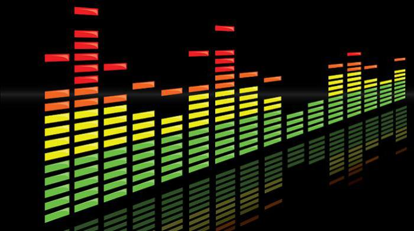

Electronic music is characterized by use of digital instruments and other synthesized elements. For more information on the origin of electronic music and some popular artists, see History of Electronic Music. For sample audio, check our Samples.